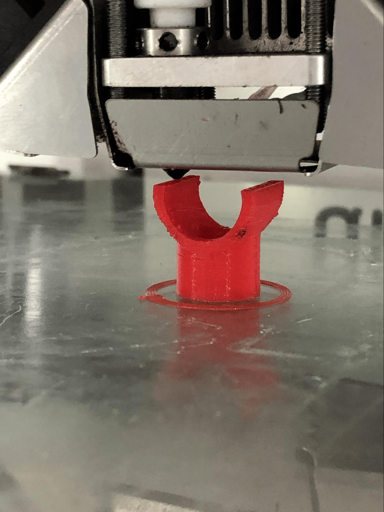
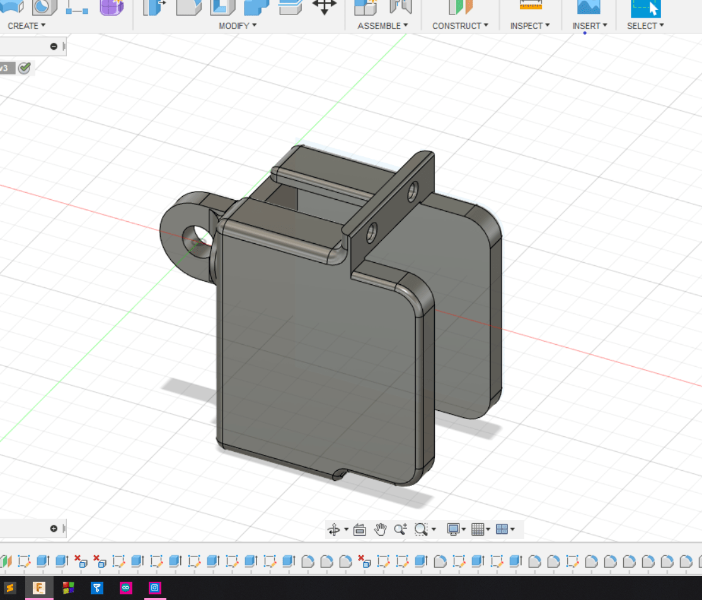

My idea for altitude movement was to replace the sliding rod of the mount with a threaded one.So I started working on threads and understanding them. I created a thread holder which would direct the movement.
During the process, my servo motor of azimuth mount was burnt off so I had to fix it. While the thread holder was being printed, I started working on the motor holder of the altitude mount.
My first 3 designs of threads failed, but on the fourth try, it worked. After 3D printing everything I had designed, I made a connector of the iron and the motor.

After compiling everything together, motion of both axes was established. Now I had to learn to control and direct that position of the telescope. Which was mainly the electric part. And it was the time I started working on my website.